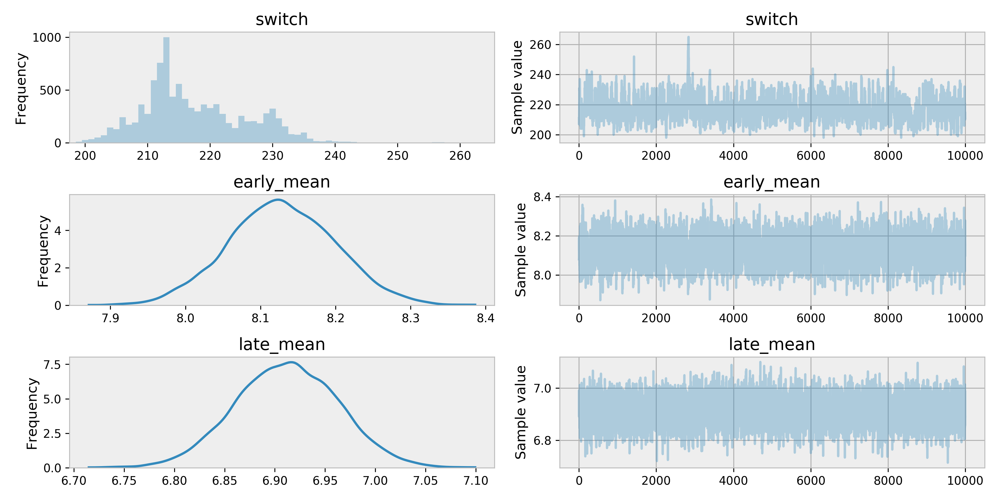

Calculating the golden-era of The Simpsons
Rob Zinkov
2017-11-03
Nathan Cunningham published last week a fantastic article about using some stats to estimate at what episode did Simpsons start to decline.
Cameron Davidson-Pilon suggested this would make a great application of Bayesian changepoint models.
Someone want to Bayesian switchpoint model this? See first chapter of BMH https://t.co/QiGwzA0khD
— Cam DP 👨🏽💻 (@Cmrn_DP) 28 October 2017
In turns out, he was totally right. Taking the Coal-mining disaster example from the pymc3 quickstart guide and slightly modifying it is enough to do the job.
First we load the data
Then we use some Gaussians to describe the average rating, and how that mean rate translates to the quality of any particular episode.
with pm.Model() as model:
switch = pm.DiscreteUniform('switch', lower=index.min(), upper=index.max())
early_mean = pm.Normal('early_mean', mu=5., sd=1.)
late_mean = pm.Normal('late_mean', mu=5., sd=1.)
mean = tt.switch(switch >= index.values, early_mean, late_mean)
ratings = pm.Normal('ratings', mu=mean, sd=1.,
observed=data["UserRating"].values)
tr = pm.sample(10000, tune=500)
pm.traceplot(tr)
As we can see around 220 is when our model thinks the Simpsons was starting to downward slide.
That would be
print("{}: {}".format(data["EpisodeID"][220], data["Episode"][220]))
# >>> S10E18: Simpsons Bible StoriesAn episode I remember being alright. Generally the 10th season is acknowledged as the last of the golden years. In fact, Chicago Simpsons Trivia Night bills itself as not asking any questions from seasons after 10.
Apologies in advance for not using more Simpsons jokes in this post. You can find the code and data I used on github.